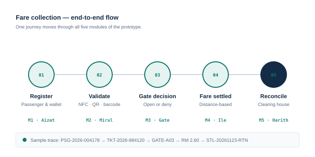

Front-end prototype · v1.0
One integrated system for every fare and every gate.
Automated Fare Collection & Access Control System for Rangkaian Transit Nasional. Registration, ticketing, media validation, barrier control, distance-based fare calculation and daily settlement reconciliation — presented as five connected modules sharing one design system.
- Transactions today
- 2,847
- Fare collected
- RM 18,462.30
- Gate devices
- 8 network
- Pages in prototype
- 16
Fare collection by operator23 Nov 2026
RTN42.5%
MLB26.6%
ERM23.4%
TAR7.5%
Settlement reconciled2 of 4
Build
Static HTML5 + CSS3
Scripting
None — by design
Data
Fictional sample records
Last built
23 Nov 2026 · 09:42 MYT

System modules
Each module is owned by one team member and shares the same navigation and styling.
MODULE 01
Passenger Portal
Registration, wallet, top-up and travel history.
Aizat
Open →
MODULE 02
Media Processing
NFC cards, mobile QR and paper barcode validation.
Mirul
Open →
MODULE 03
Gate Control
Entry and exit barriers, fare deduction at the gate.
Gate Control
Open →
MODULE 04
Fare Management
Stations, fare rules and fare calculation breakdown.
Ile
Open →
MODULE 05
Clearing House
Daily transaction totals and settlement reconciliation.
Harith Hakim
Open →